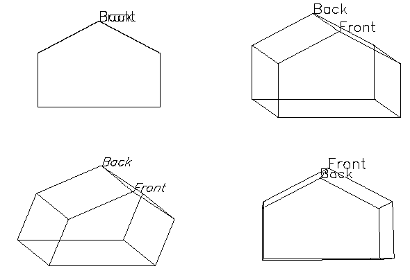

The T3D procedure implements three-dimensional transforms.
This routine accumulates one or more sequences of translation, scaling, rotation, perspective, and oblique transformations and stores the result in !P.T (the 3D transformation system variable) or in a variable specified by the MATRIX keyword. All the IDL Direct graphics routines use the value stored in !P.T when drawing output. Note that !P.T3D is not set, so for the transformations to have effect you must set !P.T3D = 1 (or set the T3D keyword in subsequent calls to graphics routines).
This procedure is based on that of Foley & Van Dam, Chapter 8, “Viewing in Three Dimensions” (Foley, J.D., and A. Van Dam (1982), Fundamentals of Interactive Computer Graphics , Addison-Wesley Publishing Co.).
Transformations are applied in the order of the following keywords: 1) RESET , 2) TRANSLATE , 3) SCALE , 4) ROTATE , 5) PERSPECTIVE , 6) OBLIQUE , 7) XYEXCH , 8) XZEXCH , 9) YZEXCH .
A right-handed system is used. Positive rotations are counterclockwise when looking from a positive axis position towards the origin.
This routine is written in the IDL language. Its source code can be found in the file t3d.pro in the lib subdirectory of the IDL distribution.
T3D [, Array ][, / RESET ] [, MATRIX = variable ] [, OBLIQUE = vector ] [, PERSPECTIVE = p {eye at 0,0, p }] [, ROTATE = [x , y , z] ] [, SCALE = [x , y , z] ] [, TRANSLATE = [x , y , z] ] [, / XYEXCH | , / XZEXCH | , / YZEXCH ]
An optional 4 x 4 matrix used as the starting transformation. If Array is missing, the current !P.T transformation is used. Array is ignored if /RESET is set.
The transformation specified by each keyword is performed in the order of their descriptions below (e.g., if both TRANSLATE and SCALE are specified, the translation is done first).
Set this keyword to a named variable that will contain the result. If this keyword is specified, !P.T is not modified.
A two-element vector of oblique projection parameters. Points are projected onto the XY plane at Z=0 as follows:
x' = x + z(d * COS(a))
y' = y + z(d * SIN(a))
where OBLIQUE[0] = d and OBLIQUE[1] = a. An oblique projection is a parallel projection in which the normal to the projection plane is the z -axis, and the unit vector (0, 0, 1) is projected to ( d cos α, d sin α) where α is expressed in degrees.
Perspective transformation. This parameter is a scalar (p) that indicates the Z distance of the center of the projection. Objects are projected into the XY plane at Z=0, and the “eye” is at point (0,0,p).
Set this keyword to reset the transformation to the default identity matrix. Set this keyword to begin a new accumulation of transformations. If this keyword is not present, the current transformation matrix !P.T is post-multiplied by the new transformation. The final transformation matrix is always stored back in !P.T. If this keyword is set, the Array argument is ignored.
A three-element vector of the rotations, in DEGREES, about the X, Y, and Z axes. The viewing area is rotated about each axis by the amount [θ x , θ y , θ z ], in degrees. Rotations are performed in the order of X, Y, and then Z.
A three-element vector of scale factors for the X, Y, and Z axes. The viewing area is scaled by factor [ S x , S y , S z ].
A three-element vector of the translations in the X, Y, and Z directions. The viewpoint is translated by the three-element vector [ T x , T y , T z ].
Set this keyword to exchange the X and Y axes.
Set this keyword to exchange the X and Z axes.
Set this keyword to exchange the Y and Z axes.
To reset the transformation, rotate 30 degs about the X axis and do perspective transformation with the center of the projection at Z = -1, X=0, and Y=0, enter:
T3D, /RESET, ROT = [ 30,0,0], PERS = 1.
Transformations may be cascaded, for example:
T3D, /RESET, TRANS = [-.5,-.5,0], ROT = [0,0,45]
T3D, TRANS = [.5,.5,0]
The first command resets, translates the point (.5,.5,0) to the center of the viewport, then rotates 45 degrees counterclockwise about the Z axis. The second call to T3D moves the origin back to the center of the viewport.
Usually, scaling parameters for coordinate conversion are set up by the higher-level procedures. To set up your own three-dimensional coordinate system with a given transformation matrix and x , y , z data range, follow these steps:
Establish the scaling from your data coordinates to normalized coordinates—the (0, 1) cube. Assuming your data are contained in the range ( X min , Y min , Z min ) to ( X max , Y max , Z max ), set the data scaling system variables as follows:
!X.S = [ -Xmin, 1 ] / (Xmax - Xmin)
!Y.S = [ -Ymin, 1 ] / (Ymax - Ymin)
!Z.S = [ -Zmin, 1 ] / (Zmax - Zmin)
Establish the transformation matrix that determines the view of the unit cube. This can be done by either calling T3D, as explained above or by directly manipulating !P.T yourself. If you wish to simply mimic the rotations provided by the SURFACE procedure, call the SCALE3 procedure (which can also be used to perform the previous step).
This example draws four views of a simple house. The procedure HOUSE defines the coordinates of the front and back faces of the house. The data-to-normal coordinate scaling is set, as shown above, to a volume about 25 percent larger than that enclosing the house. The PLOTS procedure is called to draw lines describing and connecting the front and back faces. XYOUTS is called to label the front and back faces.
The commands shown after the definition of the HOUSE procedure contain four sequences of calls to T3D to establish the coordinate transformation, each followed by a call to HOUSE.
Example Code:
If you prefer not to enter the IDL code by hand, run the batch file
showhaus
with the following command at the IDL prompt:
@showhaus
PRO HOUSE
; X coordinates of 10 vertices. First 5 are front face,
; second 5 are back face. The range is 0 to 16.
house_x = [0, 16, 16, 8, 0, 0, 16, 16, 8, 0]
; The corresponding y values range from 0 to 16.
house_y = [0, 0, 10, 16, 10, 0, 0, 10, 16, 10]
; The z values range from 30 to 54.
house_z = [54, 54, 54, 54, 54, 30, 30, 30, 30, 30]
; Define max and min xy values to scale.
; Slightly larger than data range.
min_x = -4 & max_x = 20.
; Set x data scale to range from -4 to 20.
!X.S = [-(-4), 1.]/(20 - (-4))
; Same for y.
!Y.S = !X.S
; The z range is from 10 to 70.
!Z.S = [-10, 1.]/(70 - 10)
; Indices of front face.
face = [INDGEN(5), 0]
; Draw front face.
PLOTS, house_x[face], house_y[face], $
house_z[face], /T3D, /DATA
; Draw back face.
PLOTS, house_x[face + 5], house_y[face + 5], $
house_z[face + 5], /T3D, /DATA
; Connecting lines from front to back.
FOR I = 0, 4 DO PLOTS, [house_x[i], house_x[i + 5]], $
[house_y[i], house_y[i + 5]], $
[house_z[i], house_z[i + 5]], /T3D, /DATA
; Annotate front peak.
XYOUTS, house_x[3], house_y[3], Z = house_z[3], 'Front', $
/T3D, /DATA, SIZE = 2
; Annotate back.
XYOUTS, house_x[8], house_y[8], Z = house_z[8], 'Back', $
/T3D, /DATA, SIZE = 2
END
The HOUSE procedure could be called from the IDL command line to produce a number of different plots. For example:
; Set up no rotation, scale, and draw house.
T3D, /RESET & HOUSE
; Create a handy constant.
H = [0.5, 0.5, 0.5]
; Straight projection after rotating 30 degrees about x and y axes.
T3D, /RESET, TRANS = -H, ROT = [30, 30, 0] & $
T3D, TR = H & HOUSE
; No rotation, oblique projection, z factor = 0.5, angle = 45.
T3D, /RESET, TRANS = -H, ROT=[0, 0, 0], OBLIQUE=[.5, -45] & $
T3D, TR = H & HOUSE
; Rotate 6 degrees about x and y, then apply perspective.
T3D, /RESET, TR=-H, ROT=[-6, 6, 0], PERS=4 & $
T3D, TR=H & HOUSE
|
 |
The figure illustrates the different transformations. The four rotations are:
Upper left: no rotation, plain projection
Upper right: oblique projection, factor = 0.5, angle = –45
Bottom left: rotation of 30 degrees about both the x -and y -axes, plain projection
Bottom right: rotation of –6 degrees about the x -axis and +6 degrees about the y -axis, and perspective projection with the eye at 4.
A common procedure for visualizing three-dimensional data is to animate the data by rotating it about one or more axes. To make an animation of the house in the preceding example ( House Example ), use the XINTERANIMATE procedure as follows:
; Initialize animation: set frame size and number of frames.
sizx = 300
sizy = 300
nframes = 16
XINTERANIMATE, SET=[sizx, sizy, nframes]
; Rotate about the z axis. Draw the house.Save the window.
FOR i = 0, nframes - 1 DO BEGIN $
SCALE3, AX = 75, AZ = i * 360. / nframes & $
ERASE & $
HOUSE & $
SCALE3, AX = 75, AZ = i * 360. / nframes & $
XINTERANIMATE, FRAME=i, WINDOW=!D.WINDOW & $
ENDFOR
; Show the animation.
XINTERANIMATE
In the above example, rather than SCALE3D is used to maintain the same scaling in all rotations.
Example Code:
If you prefer not to enter the IDL code by hand, run the batch file
animhaus
with the following command at the IDL prompt:
@animhaus
The CONTOUR and PLOT procedures output their results using the three-dimensional coordinate transformation contained in !P.T when the keyword T3D is specified. Note that !P.T must contain a valid transformation matrix prior to using the T3D keyword.
PLOT and its variants output graphs in the xy -plane at the normal coordinate z value given by the keyword ZVALUE. If this keyword is not specified, the plot is drawn at the bottom of the unit cube at z = 0.
CONTOUR draws its axes at z = 0 and its contours at their z data value if ZVALUE is not specified. If ZVALUE is present, CONTOUR draws both the axes and contours in the xy -plane at the given z value.
|
Original |
Introduced |